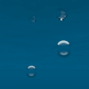
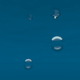

WaterSurfaceWhen looking at water from above, the surface's transparency and reflectivity changes according to the viewing angle. When looking up from below, this effect is amplified: some areas are completely reflective, while others are completely transparent, with little transition between them.The WaterSurface shader simulates these effects and more, to give a realistic appearance to the surface of water.
Surface Material is an input color computed by an illumination shader and modified by the WaterSurface shader. Transparency is the multiplier used to mix the input Surface Material color and the WaterSurface effect. Index of Refraction is a physical property of transparent solids. It controls how far light is bent when entering the object, how transparent the object is, how the reflectivity shifts with viewing angle, etc. The Index of Refraction of water is 1.33; glass is 1.5; diamond is 2.4; alcohol is 1.36. Stain Underneath causes WaterSurface to act like the Stain shader, ideal for use with the Wet shader. With Stain Underneath selected, objects that have been assigned the Wet shader will show their 'wet' texture, when seen through the surface of the water. (For further details see the respective Wet and Stain Reference sections.) Looking Into Water should be set when the camera is outside the water looking in. Looking Out of Water should be set when the camera is inside the water looking out.
 

|